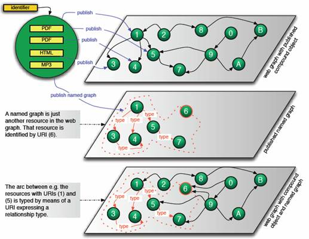
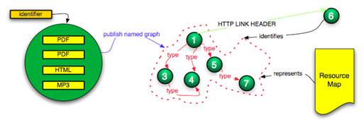

|
|
Open Archives Initiative – Object Reuse and Exchange |
|
Compound Information Objects: The OAI-ORE Perspective |
|
|
Carl Lagoze & Herbert Van de Sompel May 28, 2007 |

Acknowledgments and Document Status
This document is a work in progress of Open Archives Initiative - Object Reuse and Exchange (OAI-ORE). It was used as a discussion document in preparation of the May 2007 meeting of the ORE Technical Committee. Please send feedback to ore@openarchives.org.
OAI-ORE is supported by the Andrew W. Mellon Foundation and the National Science Foundation.
The authors acknowledge the contributions of:
OAI-ORE Technical Committee
-
Les Carr, University of Southampton
-
Tim DiLauro, Johns Hopkins University
-
Leigh Dodds, Ingenta
-
David Fulker, UCAR
-
Tony Hammond, Nature Publishing Group
-
Pete Johnston, Eduserv Foundation
-
Richard Jones, Imperial College
-
Peter Murray, OhioLINK
-
Michael Nelson, Old Dominion University
-
Ray Plante, NCSA and National Virtual Observatory
-
Rob Sanderson, University of Liverpool
-
Simeon Warner, Cornell University
-
Jeff Young, OCLC
OAI-ORE Liaison Group
-
Leonardo Candela - DRIVER
-
Tim Cole - DLF Aquifer and UIUC Library
-
Julie Allinson - JISC
-
Jane Hunter - DEST
-
Savas Parastatidis - Microsoft
-
Thomas Place - DARE and University of Tilburg
-
Andy Powell - DCMI
-
Robert Tansley - Google, Inc. and DSpace
1 Introduction and Motivation
Compound information objects [1] are aggregations of distinct information units that when combined form a logical whole. Some examples of these are a digitized book that is an aggregation of chapters, where each chapter is an aggregation of scanned pages; a music album that is the aggregation of several audio tracks; an image object that is the aggregation of a high quality master, a medium quality derivative and a low quality thumbnail; a scholarly publication that is aggregation of text and supporting materials such as datasets, software tools, and video recordings of an experiment; and a multi-page web document with an HTML table of contents that points to multiple interlinked HTML individual pages. If we consider all information objects reusable in multiple contexts (a notable feature of networked information), then the aggregation of a specific information unit into a compound object is not due to the inherent nature of the information unit, but the result of the intention of the human author or machine agent that composed the compound object.
Figure 1 - A compound information object: identified aggregation of multiple components
Several information systems, such as repository and content management systems, provide architectural support for storage of, identification of, and access to compound objects and their aggregated information units, or components (Figure 1). In most systems, the components of an object may vary according to semantic type (article, book, video, dataset, etc.), media type (text, image, audio, video, mixed), and media format (PDF, XML, MP3, etc.). Depending on the system, components can themselves be compound objects – allowing recursive containment of compound objects. Also, components may vary in network location: some components of a compound object may be locally hosted by the information system that provides access to the object, whereas others may be hosted by information systems at remote network locations, and hence are “contained” in the compound object by-reference.
Individual information systems frequently store, identify, and provide access to these compound objects in an architecture-specific manner. But, because the web is the de facto platform for interoperability, and web-based applications such as search engines have emerged as primary information portals, these same systems usually expose their objects to the web. They do this by associating a URI with each of the components of a compound object thereby making them web URI-identified resources [2]. Web services and applications, such as browsers and crawlers, can use these URIs to obtain representations of the resources via content negotiation.
For example, when publishing a book to the web[3], an information system may assign each scanned page of the book a HTTP URI. The same can be done with each chapter and actually with the book itself. There are other more complex, techniques where the object, a book in this case, is made available for viewing on desktop computers, hand-held computers and cell phones. In this case a number of methods are used including giving each scanned page multiple URIs from which different views of the same scanned page are available, or leveraging HTTP content negotiation to vary the representation returned via a resource according to the user agent making the GET request.
Unfortunately, the manner in which information systems publish compound objects to the web is frequently less-than-perfect and, without commonly accepted standards, ad hoc. In many cases, advanced functionality provided by individual information systems is lost when publishing compound objects to the web. Frequently the exposure to the web is targeted towards human users rather than machine agents. The structure of the compound object is embedded in ”splash” pages, user interface “widgets” and the like. This approach can leave the essential structure of compound objects opaque to machine-based applications such as crawlers, search engines, and networked desktop applications, which must then resort to heuristics like “screen scraping” to recover the content and structure of the compound object.
Consider again the example where all pages of a scanned book are assigned HTTP URIs. A crawler traversing the web may land on a resource corresponding to any page of the book, without regard for the actual order of the pages. Depending on the publishing approach taken by the information system, the crawler may obtain from this resource a representation that contains links to other scanned pages of the same book, or to the containing chapter or book. The representation may also contain links to related resources that are not part of the book, for example to resources that provide information about the author, the publisher, or to resources that are annotations, etc. Unfortunately these links are often un-typed, or if they do have type information, that type information cannot be automatically “understood” by the crawler since there is currently no standardized expression of link semantics on the web. Thus, a crawler or search engine cannot distinguish between the different links and notably which of the inter-linked resources correspond to the book and which do not.
In summary, the web architecture expresses the notion of linked URI-identified resources. Information systems can leverage this architecture to publish the components of a compound object and thereby make them available to web clients and services. But due to the absence of commonly accepted standards, the notion of an identified compound object with a distinct boundary and typed relationships among its component resources is lost.
The absence of these standards affects the functionality of a number of existing and possible web services and applications. Crawler-based search engines might be more useful if the granularity of their result sets corresponded to compound objects (a book or chapter, in this example) rather than individual resources (single pages). The ranking algorithms of these search engines might improve if the links among the components of a compound object were treated differently than links to the object as a whole, or if the number of in-links to the various component resources was accumulated to the level of the compound object instead of counted separately. Citation analysis systems would also benefit from a mechanism for citing the compound object itself, rather than arbitrary parts of the object. Finally, a standard for representing compound objects might enable a new class of “whole object” services such as “preserve a compound object”.
Recent work in the web community indicates recognition of the need for some mechanisms that express the notion of content aggregations:
· This issue is addressed to some extent in the W3C Note On Linking Alternative Representations To Enable Discovery And Publishing [4]. However, the W3C Note focuses on problems with expressing the relationships among resources that make different versions of a specific information unit available (e.g. various HTTP URIs available for the same scanned book page). This is a subclass of the problem described here, which is the relationship of resources that form a logical whole (e.g. various HTTP URIs available for scanned pages, chapters, book). Also, the Recommended Best Practices included in the W3C Note are clearly of interest to the broader problem described here, yet are not specific enough to serve as an implementable interoperability specification, especially for applications in the e-Scholarship and e-Learning domains, in which there is a recognized need for rich compound objects.
· Research in the Semantic Web community has introduced the notion of named graphs[5], which are essentially a set of RDF assertions, forming a graph, to which a URI is assigned. The graph as a whole then can be treated as a web resource, and assertions such as metadata statements, authority, etc. can be associated with that resource. These ideas are very promising as an approach to expressing the notion of a compound object on the web. However, they remain in a research phase, and need further specification in order to become adoptable as part of an implementable interoperability specification. Our proposals described later in this document build on this notion of a named graph.
· Syndication formats such as RSS and ATOM include the notion of an aggregation of web resources into a feed. However, the aggregations expressed in these feeds are restricted to simple sets of URIs without structure or nesting. In addition, while ATOM makes it possible to express the relationships among components of an aggregation, standard relationship semantics are lacking.
2 An OAI-ORE Interoperability Layer for Compound Objects
A core goal of OAI-ORE – Object Reuse and Exchange – is to develop standardized, interoperable, and machine-readable mechanisms to express compound object information on the web. The OAI-ORE standards will make it possible for web clients and applications to reconstruct the logical boundaries of compound objects, the relationships among their internal components, and their relationships to the other resources in the web information space. This will provide the foundation for the development of value-adding services for analysis, reuse, and re-composition of compound objects, especially in the areas of e-Science, e-Scholarship, and scholarly communication, which are the target applications of ORE
To enable widespread adoption of the standards developed by OAI-ORE we have determined that they must be congruent with and leverage the Web Architecture. This architecture essentially consists of (Figure 2):
· URIs that identify
· resources, which are “items of interest”, that,
· when accessed through standard protocols such as HTTP, return
· representations of current resource state
· and which are linked via URI references.
The combination of nodes, which denote resources, and arcs, which assert the relationships among those resources, forms the web graph, and HTTP access to this graph is the basis for services (e.g. robot-based search engines) and data mining (e.g., link analysis) from which new information and knowledge is derived.
In addition to conforming to the web architecture, OAI-ORE standards must operate in the context of heterogeneous information systems with varying internal storage formats. These systems include relational databases, directory and file structures, triple stores, XML formats, etc. The standards must co-exist with architecture or implementation specific APIs and/or user interfaces and application or community-specific identification schemes for information objects that may or may not be URI-based and protocol-based, such as strings, DOIs, Handles, URNs, PURLs, etc.
Figure 2: Web Architecture (taken from http://www.w3.org/TR/webarch/)
This heterogeneous context includes well-known web portals such as Amazon, Flickr and YouTube, as well as systems that are commonly used by scholarly communities such as Fedora, DSpace, ePrints, arXiv, PubMed Central, Elsevier’s Science Direct, JSTOR, ArtSTOR, the HighWire Press Journal platform, and others.
In summary, OAI-ORE focuses on establishing an interoperability layer that is a standardized means for publishing these repository-specific and application-specific implementations of compound objects to the web. This proposed interoperability layer consists of approaches to facilitate:
· The publication of named graphs to the web. A named graph is a set of RDF assertions identified by a URI. We propose to use these named graphs as a means for encapsulating information about compound objects and for naming them on the web.
· Discovery of these named graphs.
· Assessment of the trustworthiness of named graphs as an information source.
· Development of a variety of vocabularies for expressing types of links between resources denoted by the nodes in a named graph.
· Development of a variety of vocabularies for expressing properties of resources denoted by nodes in a named graph, especially semantic type, media type, and media format.
It should be noted that although we anticipate the need for all of the aforementioned aspects of the interoperability layer, it might not be necessary or advisable for OAI-ORE to specify each of them. For example, (c) above may be deferred to a later stage or may be addressed by other efforts. Also, while OAI-ORE may need to define lightweight vocabularies for (d) and (e) to allow bootstrapping of the interoperability layer, the definition or selection of detailed vocabularies will likely be a matter of specialized communities.
In addition, we note the following two aspects of the OAI-ORE interoperability layer:
· The interoperability layer does not replace information system-specific features and interfaces, but rather co-exists with them. In fact, a scenario where similar (e.g. Fedora, DSpace, etc.) information systems discover each other via the interoperability layer and then communicate via possibly higher-functionality system-specific mechanisms is feasible.
· Although the interoperability layer is not bound to or dependent on aspects of the system-specific architectures, it may have provision for the exchange of system-specific or application-specific information among cooperating systems. For example, information systems that share an identifier scheme such as a DOI might use the OAI-ORE interoperability layer to exchange those identifiers and thereby leverage the additional functionality or semantics provided by them, such as establishing equivalence classes based on shared DOIs or other identifiers.
The remainder of this document is a point-by-point description of aspects of this interoperability layer focusing on a proposed approach for publishing compound objects to the web (i.e. (a) and (b) above).
3 Exposing Logical Boundaries in the Web Graph
Section 1 defined compound objects as aggregations of components that are linked via a variety of relationships both external and internal to the respective object (e.g., has part, has view, cites, is cited by, annotates, etc.). When such compound objects are expressed as resources on the web, they may link to each other (e.g. (1) links to (3) in Figure 3), they may link to other resources (e.g. (5) links to (7) in Figure 3), and other resources may link to them (e.g. (2) links to (1) in Figure 3). Since the links are generally un-typed, the special relationship that exists between the resources that result from the compound object publication process is invisible in the web graph (Figure 3).
Figure 3: Publishing a compound object to the web
In some cases, an information system may “augment” the publication of the components of a compound object to the web with a user-oriented “splash” page, navigational context, or client-based scripts (e.g., javascript), which de facto represents the “document as a whole”. This is illustrated by Figure 4, where a splash page in the arXiv provides access to the various formats in which a document is available and also to external resources, such as citations. While these mechanisms embed the components of the compound object in a manner that is of utility to human users, machine interpretation and reuse of the information in these contexts is difficult or impossible.
Figure 4: Splash page for an arXiv document (http://arxiv.org/abs/hep-th/0507171)
The OAI-ORE mechanism for leveraging the web architecture to express the component/compound object relationship entails the following:
· Provide an approach to add missing logical boundary information to the web graph. This can be achieved by publishing resources that are graphs (multiple resources connected by typed links) that describe these component/compound object relationships. These published graphs overlay the web graph, and effectively become part of (are merged into[6]) it, but
· Express the notion of the boundary of a compound object and
· May be semantically richer due to the fact that they may contain typed resources (nodes) and relationships (arcs).
· This is illustrated in Figure 5 where the top pane shows the web graph without the information contained in the named graph and the bottom pane illustrates how the boundary of the object and relationships among the components are now defined.
· Identify each published graph by means of a URI so that it becomes a regular web resource (Figure 6). As a result, standard web applications are able to reference multiple resources connected by typed links (a published graph) as a whole; the URI of the graph provides the handle to use and re-use a compound of multiple resources and their inter-relationships.
As will be described in Section 4, named graph publishing is a way to achieve both goals.

Figure 5: Publishing a named graph to expose logical boundaries in the web graph
4 Named Graph Publishing
· Introducing a distinguished resource, the named graph, to correspond with a compound object. This named graph has the following characteristics:
· Because it is a graph, it consists of nodes and arcs.
· Because it is a named graph, it is identified by means of a URI. For practical reasons, such as making it possible for web clients to retrieve a representation from this resource, the use of a HTTP[7] URI is mandated in the current technical environment.
· Because it is identified by a (HTTP) URI, the named graph is a web resource. In this manner it can be linked to (referenced) by any resource on the web.
· Nodes of the graph are:
· Resources that correspond to the compound object and/or its components.
· Resources that have relationships with the nodes listed under (a) above.
· Arcs of the graph are typed relationships, where URIs identify types, among the nodes listed under (a) and (b) above.
· Making available, via the HTTP URI that identifies the named graph, a distinguished representation, the Resource Map (ReM). The ReM is an encoded description (serialization) of the named graph. It can be regarded a “splash page” for machine consumption.
Figure 6: A named graph is published at a HTTP URI. A
Resource Map is available
through content negotiation with that HTTP URI.
The following should be noted regarding the named graph:
· The named graph must be a dedicated resource published for the sole purpose of revealing compound object information.
· The only representations available through content negotiation with the HTTP URI that identifies a named graph must be serializations of the Resource Maps that express a single named graph. We image that there will be various serialization syntaxes for Resource Maps. A single serialization approach to bootstrap adoption is recommended.
· The HTTP URI of the named graph identifies an “information resource”, not a “generic resource” in terms of “What do HTTP URIs Identify?”[8] This consideration is relevant, because for information resources, a GET request issued against a HTTP URI should result in an HTTP 200 (OK) and a representation of the resource identified by the HTTP URI (Figure 6). The behavior is different for generic resources.
· Because the named graph is identified by means of a URI, it is a first class citizen on the web that can unambiguously be referenced by means of its URI. This feature provides the foundation for the object re-use and exchange goal of OAI-ORE: the HTTP URI of the named graph can be used as the handle to the compound object with which it corresponds.
· Because the nodes in the named graph denote resources, identified via URIs, they can be referenced (linked to) in the same manner as any resource on the web. This feature provides the foundation for re-use and exchange of compound object components, which is a goal of OAI-ORE.
5 Named Graph Authorship
The publication of named graphs includes issues of authorship and trust. A typical scenario would be for the information system that provides access to a compound object to also publish a named graph for it. But it is also possible that a third-party information system publishes such named graph. As a result, questions arise regarding which named graphs to trust, making the identity of the author of the named graph (a URI), and a manner in which to verify it relevant components of an interoperability fabric that is based on named graph publishing.
It should also be noted that it is possible for a single author to publish multiple named graphs that correspond with a same compound object. This would provide, for example, a mechanism for offering different perspectives of the same compound object.
6 Generalizing Named Graph Publishing
We have thus far explained named graph publishing in the context of information systems, such as Digital Library repositories, that publish complex objects to the web. However, the notion of named graph publishing extends beyond this domain. As a matter of fact, it can be used to express arbitrary aggregations of interlinked web resources, thus providing a means of expressing compound objects on the web that have no correspondence to a compound object in a specific information system.
We note then two manners in which named graphs can emerge:
· A human agent (e.g., a digital library collection manager) or machine agent (e.g., a web mining application) can take the web graph as its starting point, and based on some selection criteria or by analyzing existing links and resources, define and detect logical boundaries that can be published as named graphs.
· An information system that provides access to a compound object can publish its detailed knowledge regarding that object as a named graph to the web.
The similarities and differences of both cases are investigated in Section 7. Note that we are not implying that there will be different “types” of named graphs. Instead, the model we develop for publishing compound objects via named graphs must generalize across the cases and express the semantics of both.
7 Named Graphs for Compound Objects: Issues for Exploration
In order to explore and compare characteristics of named graphs that originate in the two ways described above, the following two scenarios are introduced:
Case 1[9]: A web start-up specializes in automated digital library collection development. It does so by a combination of focused web crawling and machine learning techniques to build collections of “learning objects” that correspond to the collection definition (e.g., descriptions of planets, algebra for middle school students, etc.). In most cases these learning objects are compound objects; for example a learning object about the planet Mars may consist of several web resources that are images of Mars and a web resource that is a textual description. The composition of the individual web resources into each learning object is guided by the training of the machine leaning algorithm. The start-up publishes each collection item (and in fact the collection itself) as a distinct resource that is a named graph thereby super-imposing previously unknown relationships to the web graph (Figure 7).
Figure 7: Case 1, web start-up publishes named graph resulting from web analysis
Case 2: A book-digitization project makes scanned books available through its web site. Using the web site’s user interface, human users can understand the structure of a specific book that spans multiple web resources, i.e. one resource for the book cover, one for the index page, one for each chapter, one for each page of each chapter, etc. In addition, several of these resources link to related resources that are not considered part of the book, i.e. commentary, advertisement, etc. Crawlers are unable to detect the semantics of this structure because it is exposed using an ad-hoc, human-oriented approach. To compensate for this, the project publishes a named graph per book that reveals this structural information in a machine-readable manner (Figure 8). This project is one among various competing projects that digitize and publish this specific book to the web. Various competing projects digitize and publish the same book and their own named graph that corresponds with it (Figure 8). And, in fact, automated processes, such as those described in Case 1, may publish named graphs that reconstruct the scanned book from resources without regard for their digitization project of origin (Figure 9).
The two scenarios raise a number of issues about named graphs that are discussed in the following subsections.
Figure 8: Case 2, Two digitization projects publish the same book and corresponding named graph
7.1 Connectedness and the Containment Node
In Case 2, illustrated in Figure 8, node (A) of the named graph that is identified by HTTP URI 1 takes on the role of a node that that essentially is a "thing that has parts", i.e. it is the presence of the compound object “as such” in the web graph. All other nodes of this named graph are either directly or transitively connected to this node. Node (B) plays the same role in the named graph identified by HTTP URI 2. In Case 2 as illustrated in Figure 9, this same role is played by node (C). For the remainder of this document we will refer to a node in this role as a containment node. The role of this node is illustrated further in Figure 10, which shows the named graph as a set of “triples” denoting the binary relationships between resources. In this illustration, the containment node is the one with URI (1), and is the subject of triples that semantically express the "hasPart" relationship.
Figure 9: Case 2, web start-up publishes book named graph referencing resources from both digitization projects
Case 1 illustrated in Figure 7 shows that named graphs as such do not necessarily consist of nodes that are fully connected. For example, a named graph can consist of the union of two unconnected sub-graphs where all nodes of each sub-graph are connected. However, since named graphs in OAI-ORE are used to represent compound objects (i.e. things that have parts), the named graphs implemented within OAI-ORE may always need a node that acts as a containment node. As illustrated in Figure 11, this can be achieved through the use of a blank node. This approach could, be used when a compound object is a simple aggregation (bag) of nodes from the web, that represents a “collection of information objects”, and when no URI is being assigned to this collection as such.
Figure 10: A named graph with containment node resource (1)
Figure 11: A named graph with a bank node as the containment node
7.2 Boundary
Both cases share the notion of named graph boundary that contains all nodes within the named graph regardless of the types of relationships expressed by the arcs. However Case 2 requires the notion of a compound object boundary that distinguishes between nodes of the named graph that are considered to be part of the compound object (a page of the book), and nodes that are not (e.g., a commentary about the book, or references made to other compound objects). We note that the notion of what is or what is not part of a compound object is a matter of perspective (determined for example by a repository manager). Nevertheless, this additional boundary concept is essential for understanding what is part of the compound object and what is not and therefore should be expressible in a named graph. Possible approaches include:
· Introducing two primitive relationship types for the arcs in the named graph, namely internal relationships and external relationships, which could then be further specialized. The compound object boundary of the respective named graph would then be defined as all nodes connected by arcs in the class internal relationship. Correspondingly, nodes connected by arcs classified as external relationships are outside the compound object boundary. This approach is problematic for three reasons. First, it forces a bifurcation of relationships types – internal or external – that does not apply for Case 1 scenarios in which the compound object notion does not exist. Second, depending on a resolution regarding the containment node issue of Section 7.1, it may further complicate scenarios in which the graph is not connected; in some cases there may not be an arc with which information about the internal or external classification of a node can be conveyed. Finally, since a node may be connected by several arcs in the named graph, potentially contradictory situations arise where a node is both external and internal.
· Introducing a node property that classifies nodes of the named graph as “internal” or “external”. This approach does not impose constraints on Case 1 scenarios because the property would just not be used.
7.3 Identification
Case 1 introduces identifiers for 4 categories of resources: the HTTP URI of the named graph, the URIs for the resources denoted by the nodes of the named graph, the URIs for the types of relationship denoted by the arcs of the named graph, and the URI of the author of the named graph.
Case 2 has the same identifier types but introduces two additional ones:
· The URI of the containment node: Because this URI refers to a specific scanned version of a book, not to “the book” in the abstract, this URI must be different for each digitization project and, in general, for any human or agent that aggregates a compound object corresponding to the book. A common way to achieve this distinction is through the use of a protocol-based URI for the identification of the containment node because such URIs are tied to network authorities.
· The identifier of “the book” in the abstract: Books have ISBN numbers, and the various scanned versions of a specific book share a same ISBN number. This number can be expressed as a URI under the urn:isbn[10] scheme. A node with this urn:isbn URI as its identifier can be included in the named graph, and an isInstanceOf relationship can be expressed between the node that indicates the containment node and the urn:isbn node.
7.4 Referencing
In both cases, the named graph is referenced by means of its HTTP URI. This URI is the handle for use and re-use of the named graph. However, Case 2 introduces a complication in that agents (humans and machines) can reference a specific scanned version of a book by means of the URI of the containment node. This ambiguous referencing could be addressed in a variety of ways, including:
· Making the URI of the containment node the same as the HTTP URI of the named graph. This seems incorrect from a modeling perspective, and it leads to a variety of representations (not only the Resource Map) to be available through content negotiation with the HTTP URI of the named graph.
· Introducing a mechanism to discover the HTTP URI of the named graph on the basis of the URI of the containment node. This could, for example, be achieved by using the HTTP LINK HEADER approach[11] (Figure 12). This can only be realized if the containment node knows about the existence of the named graph, and endorses it by making it discoverable. As such, this approach introduces a level of trustworthiness regarding the named graph.
Moreover, the question arises regarding how compound objects will be referenced for re-use (for example, as parts of other compound objects), i.e. will a compound object be referenced via its containment node or via the HTTP URI of the named graph that corresponds with it? An answer to this question must bear in mind that:
· Multiple named graphs may be published corresponding with the same compound object and possibly some of these named graphs share a containment node.
· In cases where the containment node is a blank node (Figure 11), it cannot be globally referenced.

Figure 12: Discovering the named graph via the node that indicates the thing-that-has-parts
7.5 Versioning
Versioning is important in scholarly communication, which is a major focus of the OAI-ORE work. The OAI-ORE effort is not concerned with specific semantics of versioning in various repositories and communities. It must be capable, however, of expressing versioning notions. Taking the perspective of a published compound object, three types of resources seem subject to some type of versioning:
· Resources that result from publishing components of compound objects.
· The containment node resource that represents the published compound object “as such”.
· The named graph resource corresponding with the compound object.
For each of these types of resources, versions could be both expressed as literal values associated with the resource (e.g. resource:3 ore:hasVersion “3”) and as a relationship between resources that are versions of one another (resource:3 ore:isversionOf resource:8).
Versioning of the named graph resource requires particular attention. Indeed, for discovery purposes, it would be helpful if a named graph could express the datetime of its own assertion. This assertion datetime would then be available in the Resource Map serialization of the named graph, and would help the updating process of consuming applications. An important question arises regarding the conditions under which the datetime of assertion should change: is it when the named graph itself has undergone changes (for example, a node or arc added or removed), is it when resources referenced by the graph have changed (for example, an update of a PDF file is available at the same URI as the previous one), or both?
7.6 Publishing Named Graphs versus Publishing RDF Documents
A subtle, yet meaningful difference exists, between the notion of publishing a named graph on the one hand and publishing an RDF document on the other. This difference is illustrated in Figure 13 and Figure 14 and is to an extent discussed by Carroll[12] in a thread of the W3C RDF Interest list[13]. From a modeling perspective, the named graph approach seems correct because it introduces an identifier for the graph (6 in Figure 13), whereas the RDF document approach would (ab)use the identifier of the published RDF document (D in Figure 14) as the identifier of the named graph.
Figure 13: Publishing a named graph
Figure 14: Publishing an RDF document
The choice between the two approaches has important consequences, because neither RDF nor RDF/XML truly support the named graph construct. The reason is that triples in named graphs are not really triples but rather quads (subject, predicate, object, name of graph). Handling this within the confines of RDF or RDF/XML would require reification of every triple to indicate named graph membership. Alternative approaches to serialize RDF with support of named graphs (TriX12 and TriG[14]) have been proposed but remain rather experimental. At the same time, the named graph approach introduces the crucial benefit that the HTTP URI of the named graph itself can be used as subject or object in further triples. This is important, for example, to express datetime of assertion of a named graph at the level of the named graph itself (instead of at the level of each triple of the graph), to associate authorship with a complete named graph, etc.; in essence to be able to treat the named graph as an autonomous resource.
7.7 Discovery of Named Graphs
A named graph is by definition a resource on the web, due to the fact that it identified by a (HTTP) URI. Throughout this document we have suggested that crawlers or other web agents would discover named graphs via standard traversal of the web graph, i.e. following the link from another resource to the named graph. Thus, one way to “ensure” discovery of the named graph[15] is to link to it from another resource that is embedded in the web graph, including and especially the resource that is the containment node (Figure 12). This is aligned with the Linked Data notions[16].
We suggest a number of other mechanisms to facilitate discovery of named graphs:
· Include the HTTP URIs of named graphs in crawler guidance mechanisms such as Sitemaps[17].
· Publish the HTTP URIs of named graphs via syndication mechanisms such RSS or ATOM.
· Make Resource Maps (serializations of named graphs) harvestable via the OAI-PMH[18] to allow repositories to expose to harvesting clients the compound objects that they provide access to.
8 Conclusion
Compound information objects exist on the web, both as the product of publication by repository systems and as a consequence of common multi-page web design patterns. The web architecture does not provide standardized mechanisms for describing the boundaries of these compound objects, associating a identity (URI) with these compound objects, and characterizing the links among the nodes in the compound object. This presents barriers for the exchange and reuse of these compound objects in applications such as scholarly communication environments, where the unit of expression is increasingly aggregations of text, images, data, and simulations that span the network.
We propose the use of named graphs as a mechanism to address this problem. In this paper we have described both the concept of the publication of named graphs, issues related to named graph publishing, and the manner in which named graphs can be discovered by web agents and clients.
Building on this foundation, the work of OAI-ORE can proceed to specify various modeling issues related to named graphs for compound objects. In addition, the various serialization syntaxes need to be evaluated and prototypes. As suggested, initially we may choose single serialization syntax for prototype work, and then expand later to multiple syntaxes. Named graph discovery must be further detailed, and bootstrap vocabularies for relationship typing and node typing need to be defined.
Following the development of core specifications, individual communities can then specialize the specifications according to their needs. These specializations include:
· Development of a variety of vocabularies for expressing types of links between resources denoted by the nodes in a named graph.
· Development of a variety of vocabularies for expressing properties of resources denoted by the nodes in a named graph, especially semantic type, media type, and media format.